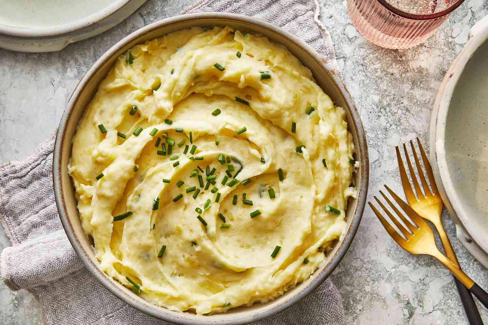

How To Make Mashed Potatoes, The Southern Way

Take ye ole potato to the next level by applying some of that sought after hospitality!
Ingredients You'll NEED
Disclaimer: Dairy products may be supplemented for oils or fatty alternatives but may not taste as intended by this recipe.
- Yukon Gold Potatoes
- Butter
- Salt
- Pepper
- Garlic
- Thyme
- Extra Virgin Olive Oil
- Milk or Cream
Steps:
Disclaimer: If you prefer mashed potatoes with skin, just don't peel them in the first step.
- Acquire a large enough pot to hold nearly double the amount of potatoes you have
- Fill this pot halfway with water and place on stove on high heat
- Peel Potatoes and roughly cut into sections
- Once water is boiling, place the potatoes in the pot
- After 20 minutes, strain potatoes
- Mash the potatoes in the pot
- Add butter, milk, and seasonings to your liking while stirring the pot
- Once the consistency has reached as desired, you are done!